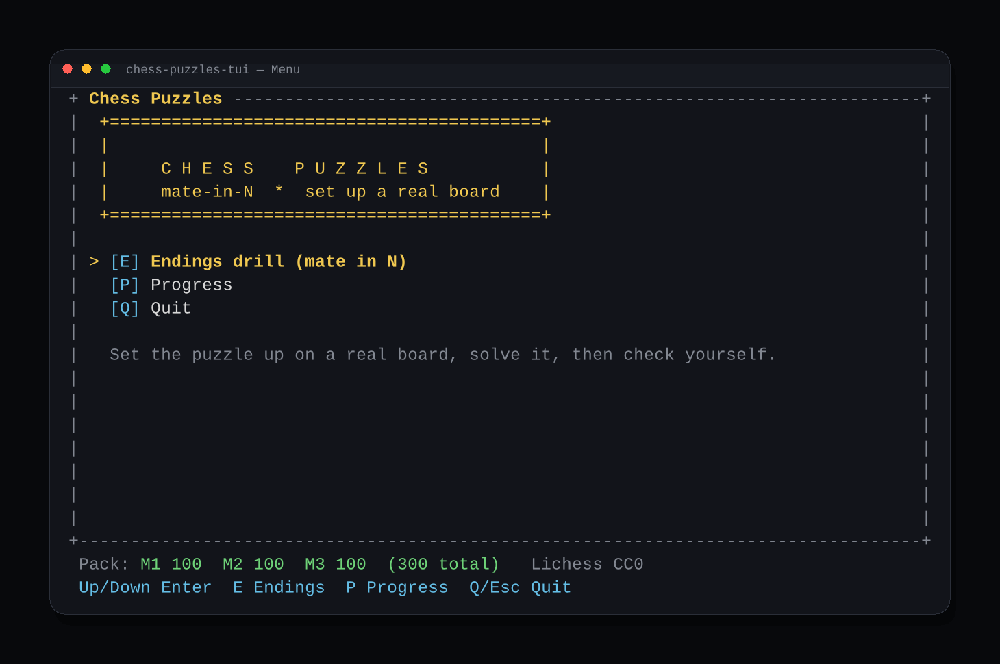
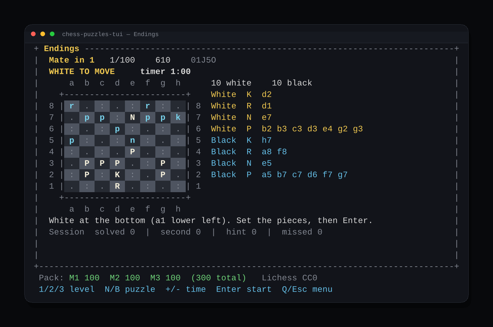
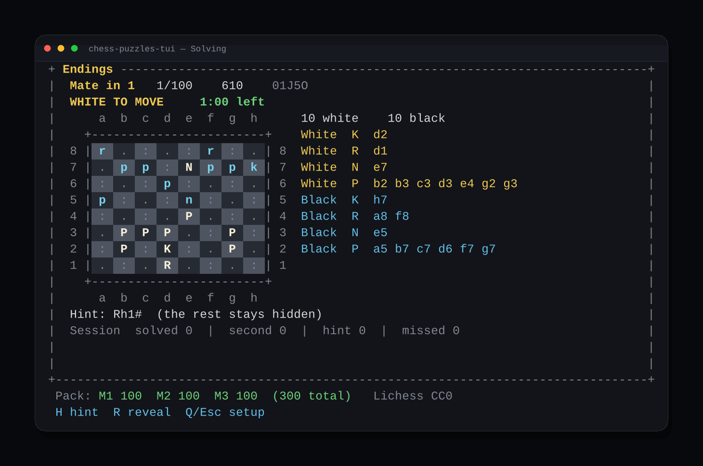
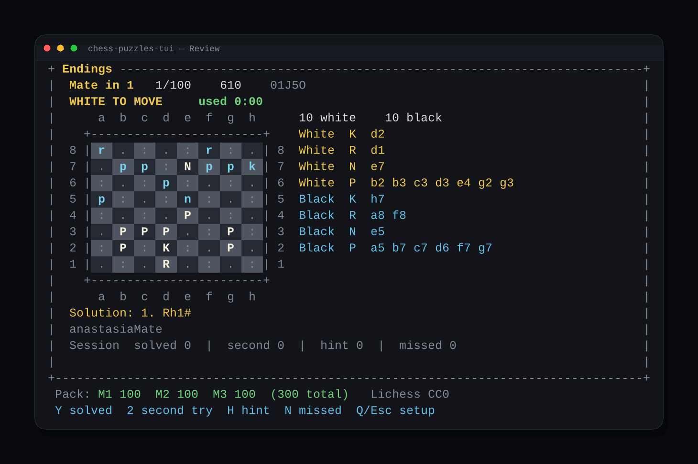
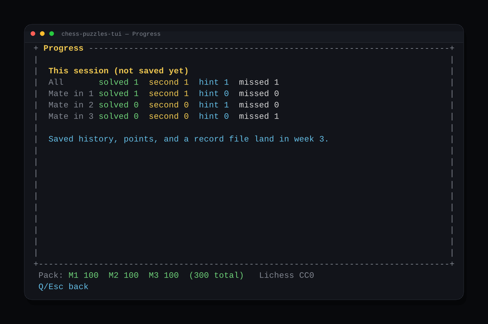

A terminal trainer for mate-in-N endings. It shows the position, you set it up on a real board, solve it against a timer, then grade yourself. Fixed-width ASCII, so it stays aligned over SSH.
The screens the app draws. The board shots are puzzle 01J5O, mate in 1, white to move. Empty dark squares are . and light squares are :.





H shows only the first move. R reveals the line and stops the clock.| Screen | Keys |
|---|---|
| Menu | Up/Down + Enter, E endings, P progress, Q or Esc quit |
| Setup | 1 / 2 / 3 level, N or Right next, B or Left previous, + / − time, Enter start |
| Solving | H first-move hint, R reveal, Q or Esc back with no grade |
| Review | Y solved, 2 second try, H hint, N missed |
| Progress | Q or Esc back. This session only, until saved history lands. |
git clone https://github.com/oldandcodey/chess-puzzles-tui.git cd chess-puzzles-tui chmod +x play ./play cargo test
The pack is data/puzzles.json, read relative to the working directory. ./play cds to the project root first. Over SSH, export TERM=xterm-256color if the colors look off.
300 puzzles, 100 each of mate in 1, 2, and 3, ratings spread from 600 to 2000. Built once from the Lichess open database, which is released under CC0. Thank you, Lichess. Each row links back to https://lichess.org/training/ plus the puzzle id.